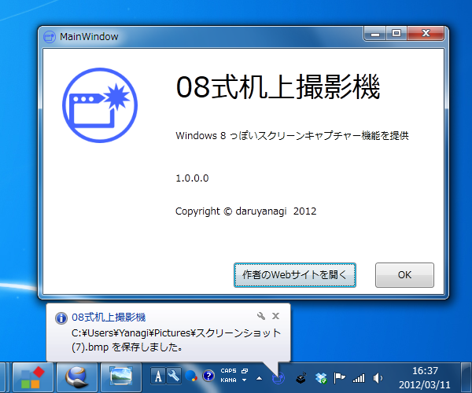

「08式机上撮影機（Type08ScreenCapture）」を公開しました
公開日：

「08式机上撮影機（Type08ScreenCapture）」は、Windows 8の［Windows］＋［PrintScreen］機能をWindows 7で実現します。ホットキーを押すと、デスクトップのスクリーンショットを撮影して、ピクチャーフォルダへ自動保存することができます。細部仕様が異なるのはキニシテハイケナイ。
- Type08ScreenCapture - Daruboard
- Windows 8 は［Windows］＋［PrintScreen］キーでデスクトップのスクリーンショットを“ピクチャー”フォルダに保存できる - だるろぐ
注意事項
- .NET Framework 4 Client Profile が必要です。インストール時にセットアップされます。
- 一部ブラウザーがインストーラーを不正なファイルとして検出します。別に怪しい挙動を仕込んではいませんが、気になる方はダウンロードを控えていただけますようお願いいたします。 - オレの作ったアプリが不正なファイル呼ばわりされる件について - だるろぐ